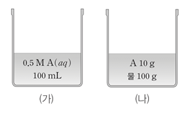

문제:
그림은 t℃에서 A(aq) (가)와 (나)를 나타낸 것이다. (가)의 밀도는 1.05g/mL이다. 이에 대한 설명으로 옳은 것만을 있는 대로 고르시오. (단, 용액의 온도는 t℃로 일정하고, A의 화학식량은 100이다.)
- 용매의 질량은 (가)와 (나)가 같다.
- (가)에 A(s) 5g을 추가로 녹인 용액의 퍼센트 농도는 (나)와 같다.
- (나)에 물을 넣어 200mL로 만든 용액의 몰 농도는 (가)와 같다.
1. A
2. B
3. A, C
4. B, C
5. A, B ,C